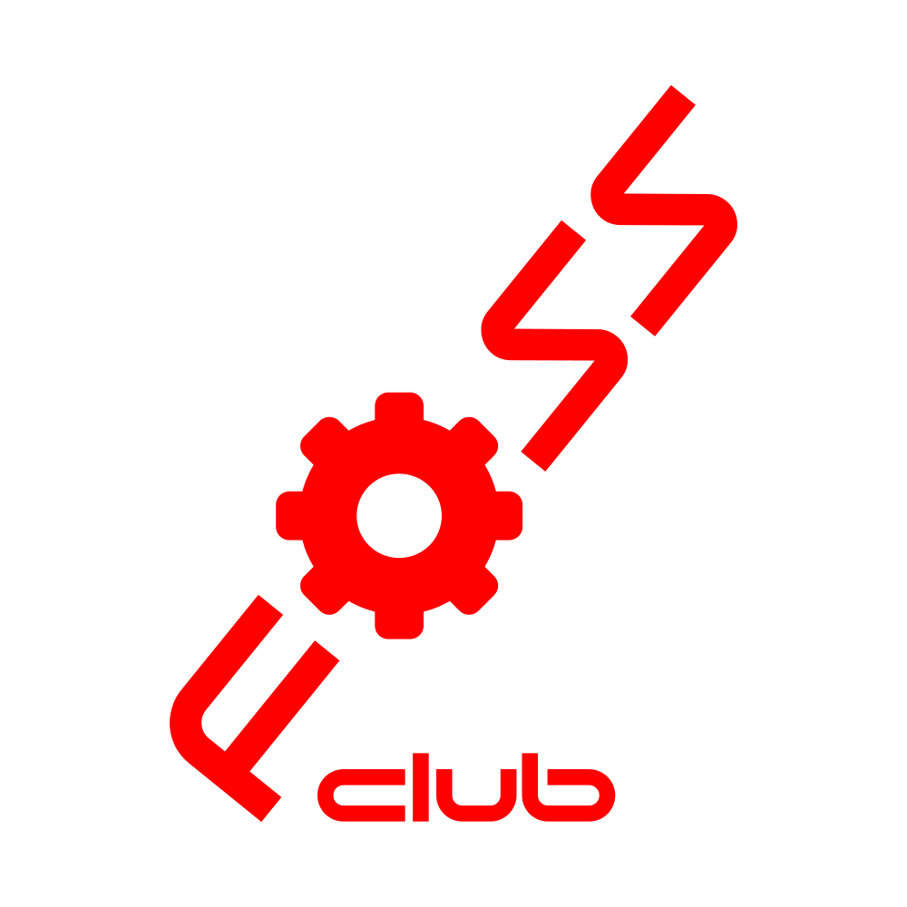
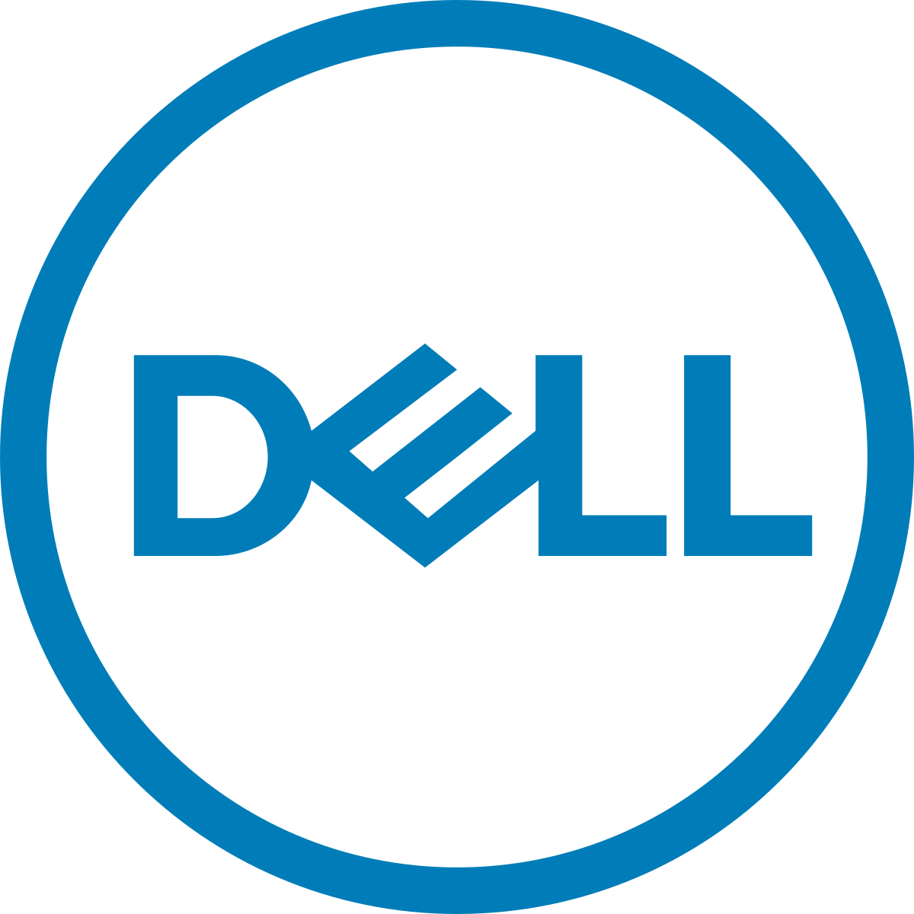

Experience
Undergraduate Assistant - UTEP
Sept 2024 - Present
I assist students and faculty at UTEP’s College of Education with computers, classrooms, printers, and podcast studio tech. I enjoy solving problems and helping others feel confident with technology.

Logistics Officer - FOSS Club at UTEP
March 2025 - Present
Organizing workshops and meetups about open-source tools. Handling event planning and connecting with passionate developers.

Dell Tech Academy - Dell Technologies
Feb 2025 - March 2025
Built a business continuity plan for a Dell facility. Focused on resilience against winter storm risks, IT and supply chain strategies.

Bloomberg Tech Lab - Bloomberg
Jan 2025 - Feb 2025
Developed a full-stack News Feed app using React, Flask, Redis, and Docker. Focused on backend optimization and scalable design.